NeuroPilot 模拟路径搜索存内计算零基础精讲：让“寻路”像水波一样扩散 NeuroPilot: A 28nm, 69.4fJ/node and 0.22ns/node, 32×32 Mimetic-Path-Searching CIM-Macro with Dynamic-Logic Pilot PE and Dual-Direction Searching（ISSCC 2025 · Paper 14.7）
前面几篇 CIM 都在算“乘法累加”。这一篇完全不同：它算的是路径搜索（path finding）——自动驾驶微机器人导航、VLSI 布线、城市路径规划、波前传播都要用的基础算子。模拟路径 CIM（Mimetic-Path CIM）把地图网格映射成 PE 阵列，让“搜索信号”像水波一样在阵列里扩散，天然并行、天然省电。
这篇东南大学司鑫组的 NeuroPilot（28nm 32×32）用三招解决旧方案的三大痛点：
- DDS 双向搜索：START 和 END 同时发出波前，中间交汇 → 处理时间 −2.1×、功耗 −1.13×；
- 动态逻辑 Pilot PE + OPC 外扩预充电：每个 PE 只含 14 个 SRAM 单元 + 8 邻接传播核心，预充电信号跟着波前走（只充“即将用到”的 PE）→ 面积 −1.32×、动态容量 −1.35×；
- TsCFP 三步粗/细路径：粗图找走廊 → 沿走廊切条带求细路径 → 1024×1024 大图也能高效导航（旧金山例：373.82ns / 512.5pJ）。
实测：搜索率 3670M nodes/s、单节点能量 69.4 fJ、PE 面积 213.6 μm²。
- 路径搜索可以“硬件化”：Dijkstra/BFS 这类算法在 CPU 上是顺序的；但把地图摊成 PE 阵列后，每个节点同时“看”自己的邻居——搜索并行度 = 地图大小，速度是 CPU 的千倍级。
- 双向搜索为什么省一半时间：单向搜索的信号要“铺”满 START 到 END 的整个区域；双向同时出发，各自只走一半距离就交汇——覆盖面积几乎减半。
- 动态逻辑是“省面积”的瑞士军刀，但怕漏电：动态逻辑节点靠电容保持电荷（比 DFF 省晶体管），但电荷会漏。OPC 让预充电“只充马上要用的 PE”，漏电窗口最短、容量需求最小。
§0.1摘要逐句精读
| 原文（摘录） | 人话解释 |
|---|---|
| “Autonomous micro-robots… require efficient path-finding algorithms… Similarly, VLSI routing, urban path planning, and wavefront propagation also demand optimal navigation” | 应用：微机器人导航、VLSI 布线、城市路径规划、波前传播——都需要高效寻路。 |
| “(1) single-direction searching (SDS) inefficiently utilizes half of the available search time” | 挑战 1：单向搜索浪费一半搜索时间。 |
| “(2) DFF-based temporary storage suffers from poor PPA, while dynamic-logic based alternatives are prone to leakage” | 挑战 2：DFF 暂存 PPA 差；动态逻辑又怕漏电。 |
| “(3) limited processing windows can lead to task failures in large-scale maps” | 挑战 3：有限处理窗口在大图上任务失败（整图映射模糊、拆图局部最优）。 |
| “(1) dual-direction searching (DDS)… (2) a dynamic-logic pilot PE with an outspread pre-charge (OPC) circuit… (3) a novel 3-step coarse/fine-path (TsCFP) flow” | 三招：DDS 双向搜索、动态逻辑 Pilot PE + OPC、TsCFP 三步粗/细路径。 |
| “3670M nodes/s, 213.6μm² PE area, and a 69.4fJ node energy consumption” | 实测：3670M 节点/秒、213.6 μm² PE 面积、69.4 fJ/节点。 |
§0.2论文的核心贡献清单
- DDS 双向搜索：START/END 同时出发、交汇即停 → 例图时间 −2.1×、功耗 −1.13×；32×32 无障碍图 −2.0×/−1.28×；
- 动态逻辑 Pilot PE：14 个 SRAM 单元（SRAM_F 地图数据 + SRAM_R 方向数据）+ 8 邻接发射器 + 中心核心；双动态逻辑冗余抗 PVT；
- OPC 外扩预充电：预充电随波前外扩、交汇终止 → 保持时间 −1.49×、动态容量 −1.35×、面积 −1.32×；
- TsCFP 三步流程：粗图 → 粗路径走廊 → 沿走廊细路径，解决大图导航（旧金山例 373.82ns）；
- 实测：3670M nodes/s、69.4 fJ/node、213.6 μm²；FoM（搜索率/能量/PE 尺寸）比前作 [1-5] 高 31.49 – 2.148e7×。
完全零基础：按 01→09 顺序读，重点玩 3 个交互仿真、看 3 个视频，约 60 分钟。这篇没有“乘法器”，全程是“信号的传播”故事——换个脑子读 CIM。
§1背景：路径搜索与“模拟路径 CIM”
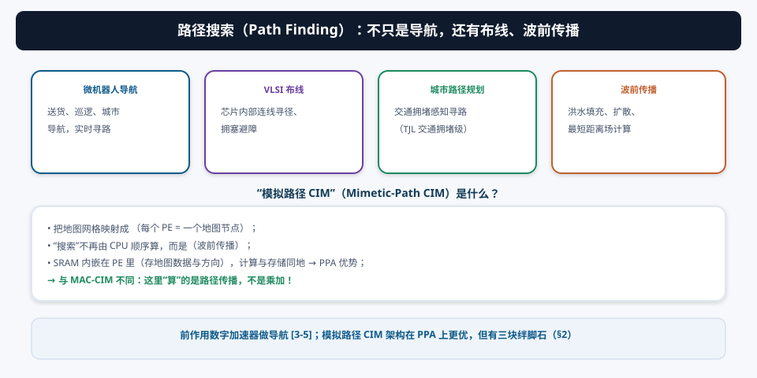
路径搜索（Dijkstra、A*、BFS）在 CPU 上是顺序的：每次只扩展一个节点，地图越大越慢。模拟路径 CIM 把地图网格直接映射到 PE 阵列，信号并行传播——32×32 阵列 = 1024 个节点同时“在看邻居”。这就是它比数字加速器 [3-5] PPA 更优的原因。
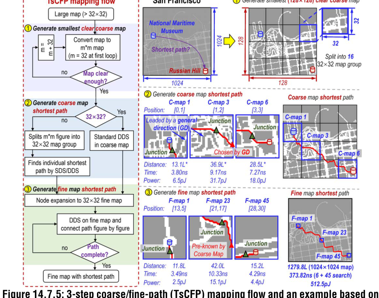
§2三大挑战（论文的问题定义）
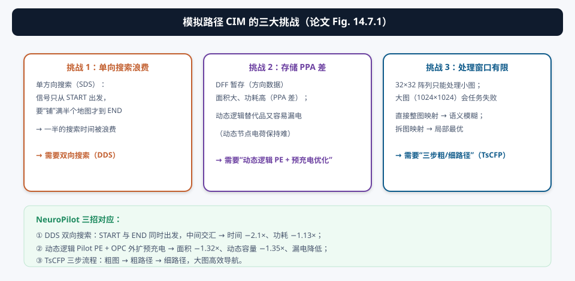
| 挑战 | 本质 | 本文对策 |
|---|---|---|
| ① 单向搜索浪费 | 信号从 START 一路铺到 END，覆盖面积浪费一半 | DDS 双向搜索：两端同时出发、中间交汇 |
| ② 存储 PPA 差 | DFF 面积大功耗高；动态逻辑怕漏电 | 动态逻辑 Pilot PE + OPC：SRAM 存方向 + 预充电优化 |
| ③ 处理窗口有限 | 32×32 阵列装不下大图；整图映射模糊、拆图局部最优 | TsCFP 三步流程：粗图 → 走廊 → 细路径 |
§3波前传播基础：搜索像水波一样扩散
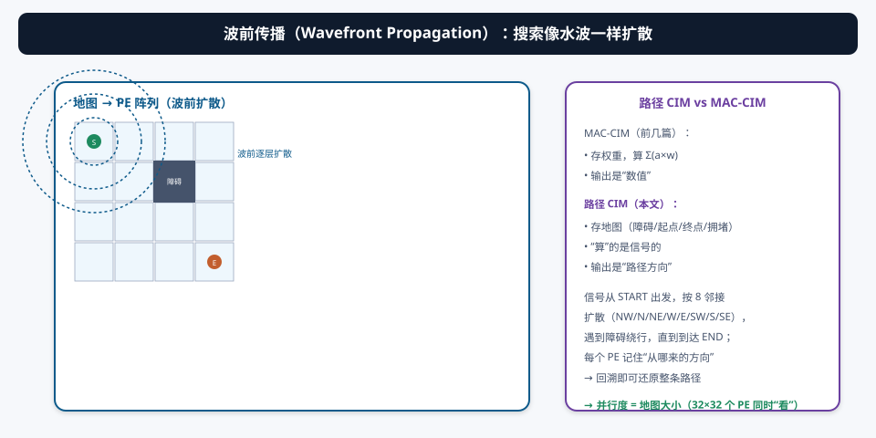
| MAC-CIM（前几篇） | 路径 CIM（本文） | |
|---|---|---|
| 存什么 | 权重 | 地图（障碍/起点/终点/拥堵级） |
| 算什么 | Σ(激活×权重) | 信号传播与选路 |
| 输出 | 数值结果 | 路径方向 |
每个 PE 记住“信号从哪个方向来”（存进 SRAM_R），波前到达 END 后，沿方向数据回溯就能还原整条路径。这个“传播 + 记方向 + 回溯”的框架是理解全文的钥匙。
§4创新①：DDS 双向搜索 —— 两端同时出发，中间交汇
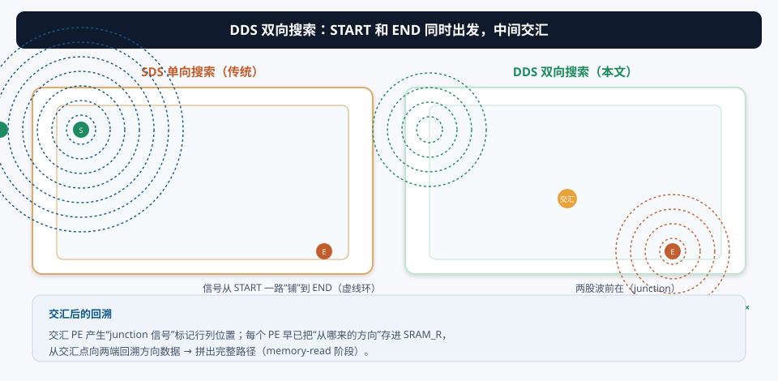
单向搜索（SDS）的信号从 START 一路“铺”到 END——波前覆盖的区域几乎是整个地图（最坏情况）。DDS 让 START 和 END 同时发出波前：
- 两股波前各自以“8 邻接”扩散，在中间某个 PE 交汇（junction）；
- 交汇 PE 产生 junction 信号：去激活自身、产生行列信号标记交汇位置、并终止 OPC 预充电（§5.2）；
- 每个 PE 早已存好“从哪来的方向”→ 从交汇点向两端回溯 → 拼出完整路径。
例图（ISSCC 风格地图）：时间 −2.1×、功耗 −1.13×；32×32 无障碍图：处理 −2.0×、功耗 −1.28×。直觉：两股波前各自只走“一半距离”，总覆盖面积几乎减半——搜索时间与能耗同时减半。
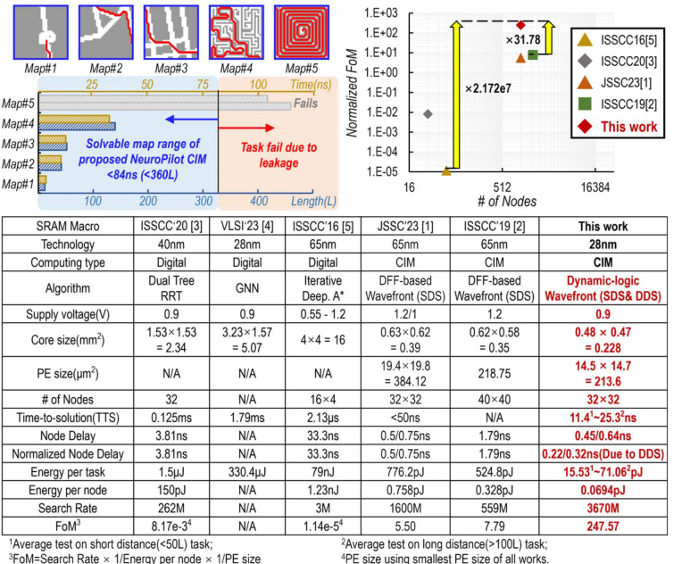
§5创新②：动态逻辑 Pilot PE + OPC 外扩预充电
5.1 Pilot PE 结构：14 个 SRAM + 8 邻接
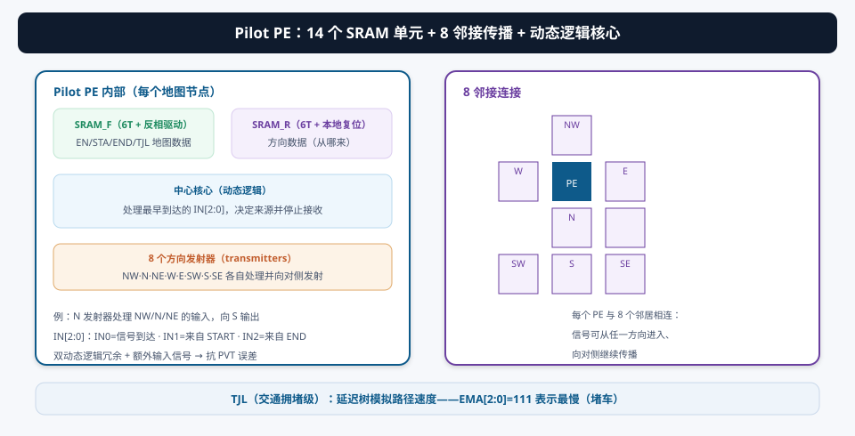
- SRAM_F（6T + 反相驱动器）：存 EN（使能）、STA（起点）、END（终点）、TJL（交通拥堵级）；
- SRAM_R（6T + 本地复位 + 反相写入器）：存方向数据（信号从哪来）——比 DFF 省面积（§9 图）；
- 中心核心（动态逻辑）：处理最早到达的 IN[2:0]（IN0=信号到达、IN1=来自 START、IN2=来自 END），确定来源后停止接收其他输入；
- 8 个方向发射器：每个处理 3 个方向的输入、向对侧发射输出（例：N 发射器收 NW/N/NE、发 S 输出）；
- TJL 电路：延迟树模拟路径速度（EMA[2:0]=111 = 最慢/堵车）；双动态逻辑冗余 + 额外输入信号抗 PVT。
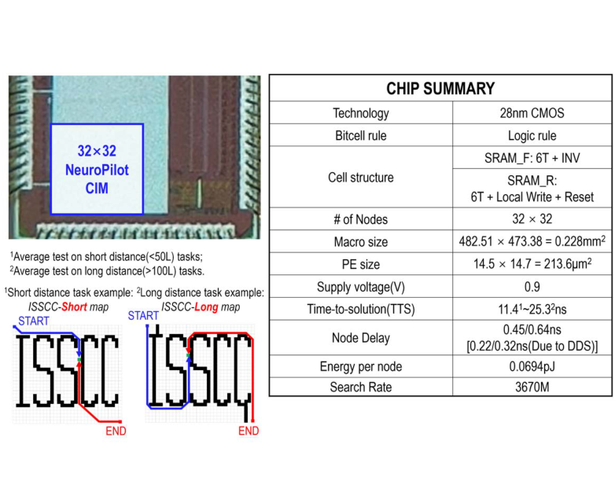
5.2 OPC 外扩预充电：只充“即将用到”的 PE
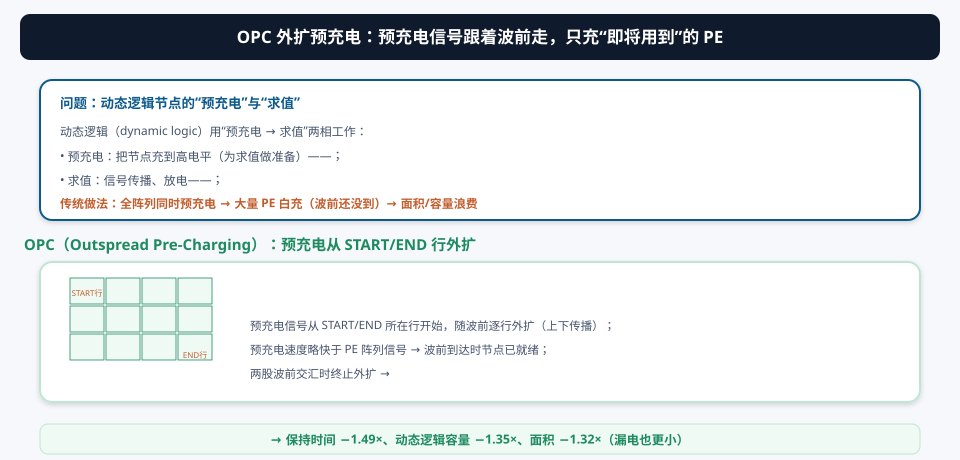
动态逻辑用“预充电 → 求值”两相工作。传统做法全阵列同时预充电：波前还没到的 PE 也在白充，面积/容量浪费。OPC 利用 PE 阵列的逻辑传播延迟：
- 预充电信号从 START/END 所在行开始，随波前逐行外扩（上下传播）；
- 预充电速度略快于 PE 阵列信号 → 波前到达时节点已就绪；
- 两股波前交汇即终止外扩。
保持时间（动态节点电荷保持）−1.49× → 动态逻辑容量需求 −1.35× → 面积 −1.32×；配合 MOS 电容（高密度）替代 MOM 电容，漏电也更小。
§6创新③：TsCFP 三步粗/细路径流程 —— 大图导航
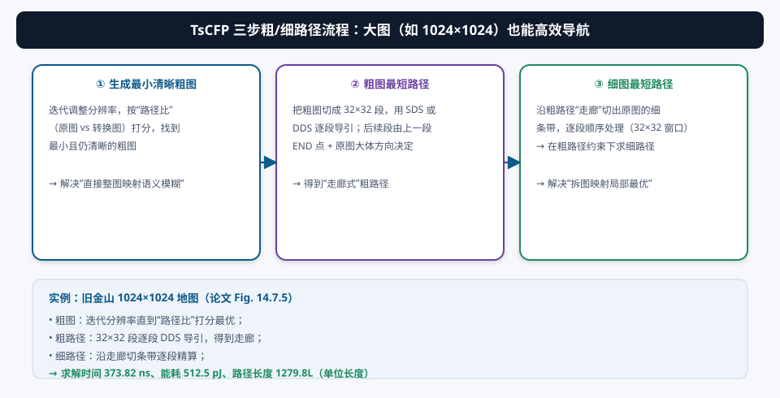
32×32 阵列只能处理小图；1024×1024 的大图怎么办？直接整图映射会“语义模糊”（大格子把细节抹平），拆图独立求解又容易“局部最优”（每段各自最优、拼起来不是全局最优）。TsCFP 分三步化解：
- 生成最小清晰粗图：迭代调整分辨率，按“路径比”（原图与转换图的路径相似度）打分，找到最小但仍清晰的粗图；
- 粗图最短路径（走廊）：把粗图切成 32×32 段，用 SDS/DDS 逐段导引；后续段的起点由上一段的 END 点 + 原图大体方向决定 → 得到一条“走廊”；
- 细图最短路径：沿走廊切出原图的细条带，逐段顺序精算 → 在粗路径约束下求最优细路径。
求解时间 373.82 ns、能耗 512.5 pJ、路径长度 1279.8L（单位长度）。粗图约束走廊、走廊约束细路径——三层尺度协作，既不被大图淹没、也不会陷进局部最优。

§7系统架构与三阶段工作流
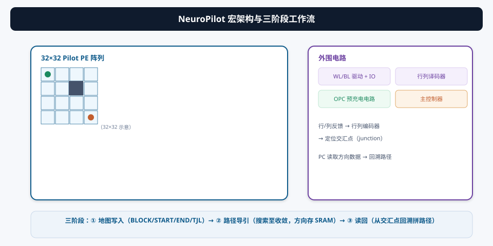
三阶段工作流（论文 Fig. 14.7.2 底部）：
- 地图写入（memory-write）：把地图数据——BLOCK（不可达单元）、START、END、TJL（交通拥堵级）——写入 PE 的 SRAM_F；
- 路径导引（path-pilot）：启动路径搜索（DDS），信号传播直到交汇收敛；每个 PE 把方向信息存进 SRAM_R；
- 读回（memory-read）：从交汇 PE 出发，沿 SRAM_R 的方向数据回溯，拼出最终路径（PC 进一步处理）。
控制器先做地图预处理：根据地图尺寸决定走“直接 CIM 宏处理”（小图）还是“TsCFP 粗/细映射”（大图）。
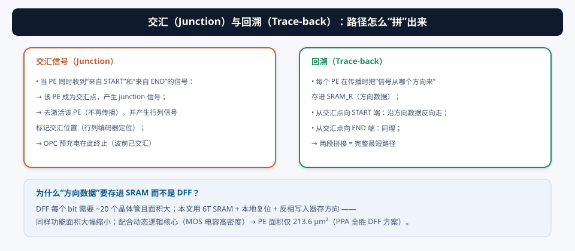
§8实测与对比：28nm 芯片的成绩单
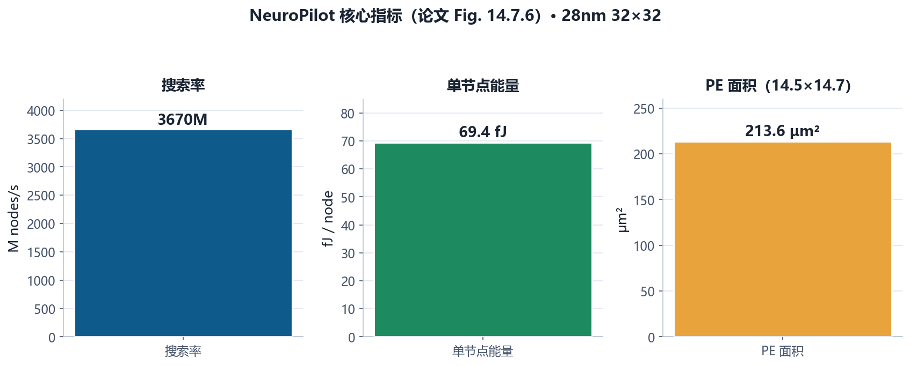
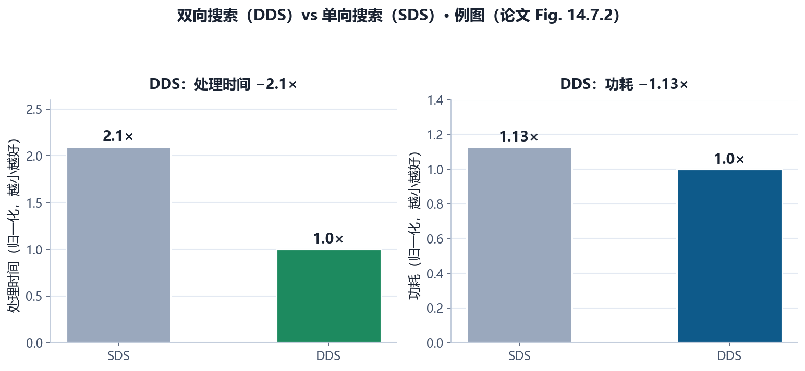
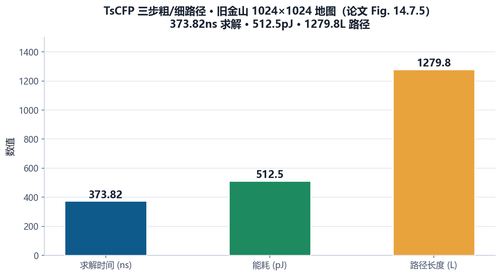
- 工艺：28nm，32×32 NeuroPilot CIM 宏；
- 动态逻辑衰减分析：适用于最长 360L（84ns） 的任务，覆盖真实场景（50-100L）与复杂迷宫（>100L）；
- FoM（搜索率/单节点能量/PE 尺寸）：相对前作路径搜索工作 [1-5] 提升 31.49 – 2.148×10⁷×。
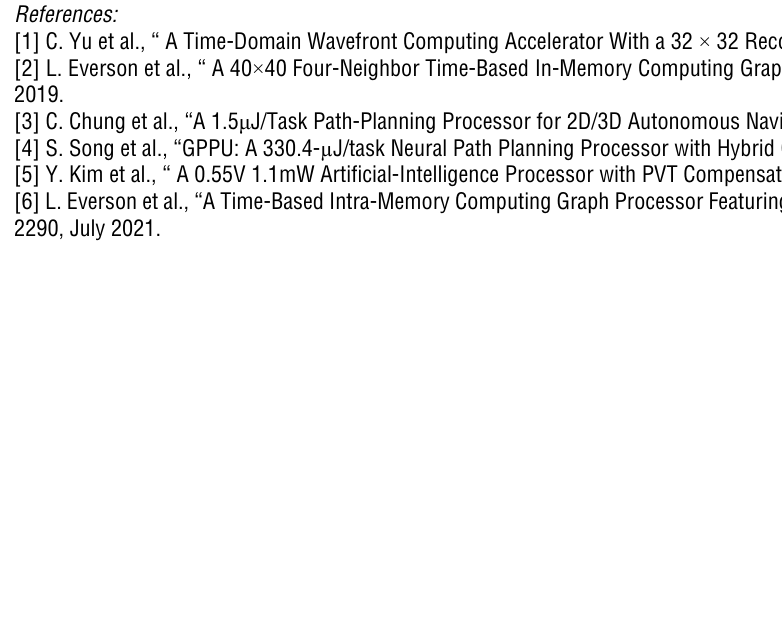
① FoM 提升跨度高达 31.49 – 2.148e7×：因为对比对象 [1-5] 覆盖“时域波前加速器、数字路径规划处理器、PVT 补偿 AI 处理器”等不同路线，架构差异巨大，倍数只能说明量级；② 69.4 fJ/node 和 3670M nodes/s 是“路径传播”的能耗与速率，与 MAC-CIM 的 TOPS/W 不是一个量纲，不能直接比较；③ “360L 任务上限”由动态逻辑衰减决定，更大地图要依赖 TsCFP 分块——这是设计边界，读时要认清。
§9未来研究方向 · 术语表 · 参考资料
9.1 未来研究方向
- 更大规模阵列与 3D 集成：32×32 是起点。128×128、256×256 阵列配合 3D 堆叠（08 号论文路线），单片覆盖更大地图；动态逻辑衰减的“360L 上限”也随工艺/阵列架构提升；
- 带权图与多目标寻路：本文的传播是“等速 + TJL 延迟树”。扩展到加权边（真实路网）、多目标点（TSP 类）、动态障碍（实时避障），需要 PE 支持“代价累积”；
- 与 MAC-CIM 融合的“感知-规划”芯片：前几篇做“看”（CNN 推理）、本文做“走”（路径规划）——把 EVS（05 号论文）+ CNN-CIM + 路径 CIM 集成成一个“感知-规划”一体化边缘芯片，是微机器人的完整大脑；
- TsCFP 的自动化：粗图分辨率选择和路径比打分目前是启发式。做一个“地图自适应”的自动缩放器（结合机器学习预测最优粗图级别），大图流程更鲁棒；
- 动态逻辑的可靠性工程：漏电/保持时间是动态逻辑的软肋。引入片上电压/温度感知（PVT 补偿 [5]）、自适应预充电策略，让动态逻辑在更宽的工作范围可靠；
- 通用图算法加速：波前传播能加速的不只是寻路——连通性、最短路径树、洪水填充、神经网络的反向传播（图依赖）。把 PE 阵列做成“可重构图处理器”，应用面更广。
9.2 术语表
- Mimetic-Path CIM（模拟路径 CIM）
- 把地图映射成 PE 阵列、用信号传播做路径搜索的 CIM。
- 波前传播（Wavefront Propagation）
- 信号从起点像水波一样逐层扩散的搜索方式。
- SDS（Single-Direction Searching）
- 单向搜索：信号只从 START 出发。
- DDS（Dual-Direction Searching）
- 双向搜索：START 与 END 同时出发，中间交汇（−2.1× 时间）。
- Junction（交汇点）
- 两股波前相遇的 PE；产生 junction 信号标记位置。
- Trace-back（回溯）
- 沿方向数据从交汇点向两端还原路径。
- Pilot PE
- 导引处理单元：14 个 SRAM + 中心动态逻辑核心 + 8 邻接发射器。
- SRAM_F / SRAM_R
- 地图数据存储（EN/STA/END/TJL） / 方向数据存储。
- TJL（Traffic-Jam Level）
- 交通拥堵级；延迟树模拟速度（EMA=111 最慢）。
- 动态逻辑（Dynamic Logic）
- 预充电-求值两相的电路风格，省面积但需防漏电。
- OPC（Outspread Pre-Charging）
- 外扩预充电：预充电随波前外扩、交汇终止（−1.32× 面积）。
- TsCFP（3-Step Coarse/Fine-Path）
- 三步粗/细路径：粗图 → 走廊 → 细路径。
- 路径比（Path Ratio）
- 原图与转换图路径相似度，用于粗图分辨率打分。
- EMA[2:0]
- 拥堵级编码（111 = 最慢）。
9.3 参考资料
- A. Guo, J. Zhang, et al., “NeuroPilot: A 28nm, 69.4fJ/node and 0.22ns/node, 32×32 Mimetic-Path-Searching CIM-Macro with Dynamic-Logic Pilot PE and Dual-Direction Searching,” ISSCC 2025, Paper 14.7. DOI: 10.1109/ISSCC49661.2025.10904805
- C. Yu et al., “A Time-Domain Wavefront Computing Accelerator With a 32×32 Reconfigurable PE Array,” IEEE JSSC, vol. 58, no. 8, 2023.（前作 [1]）
- L. Everson et al., “A 40×40 Four-Neighbor Time-Based In-Memory Computing Graph ASIC Chip Featuring Wavefront Expansion and 2D Gradient Control,” ISSCC 2019, pp. 50-52.（前作 [2]）
- C. Chung et al., “A 1.5μJ/Task Path-Planning Processor for 2D/3D Autonomous Navigation of Micro Robots,” ISSCC 2020, pp. 324-326.（数字加速器对比 [3]）
- Y. Kim et al., “A 0.55V 1.1mW Artificial-Intelligence Processor with PVT Compensation for Micro Robots,” ISSCC 2016, pp. 258-260.（PVT 补偿 [5]）
- L. Everson et al., “A Time-Based Intra-Memory Computing Graph Processor Featuring A* Wavefront Expansion and 2-D Gradient Control,” IEEE JSSC, vol. 56, no. 7, 2021.（[6]）